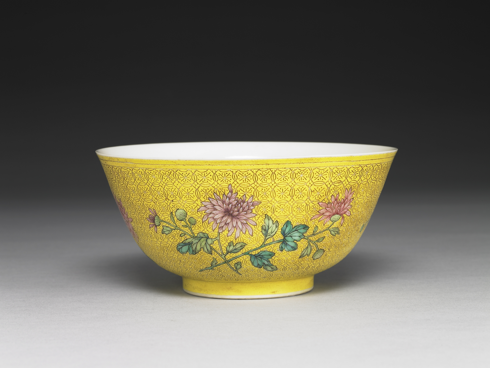
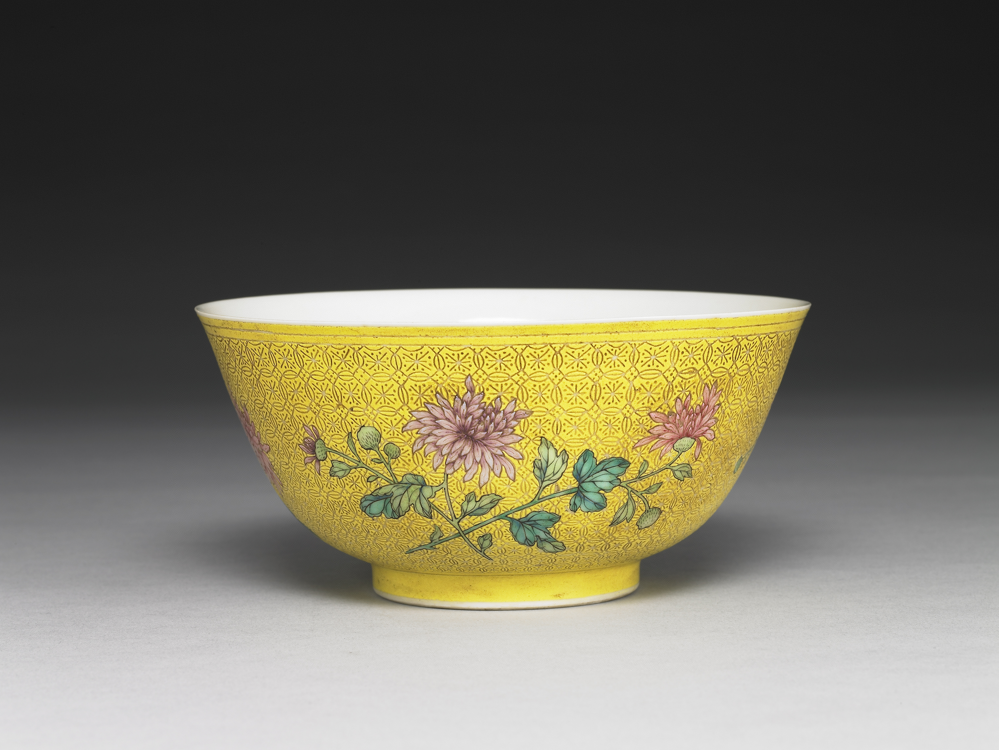
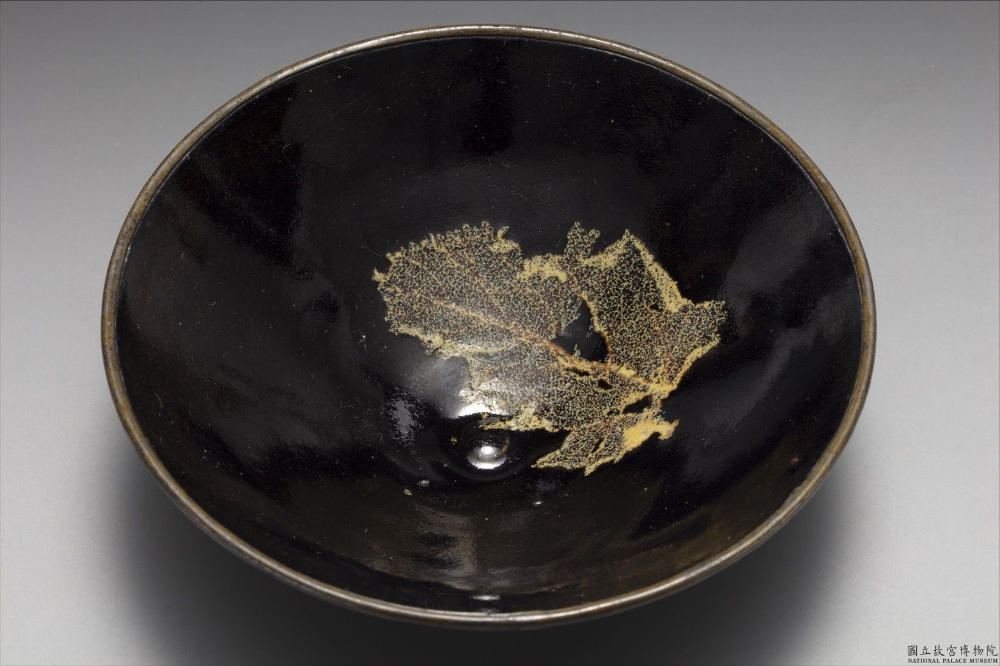
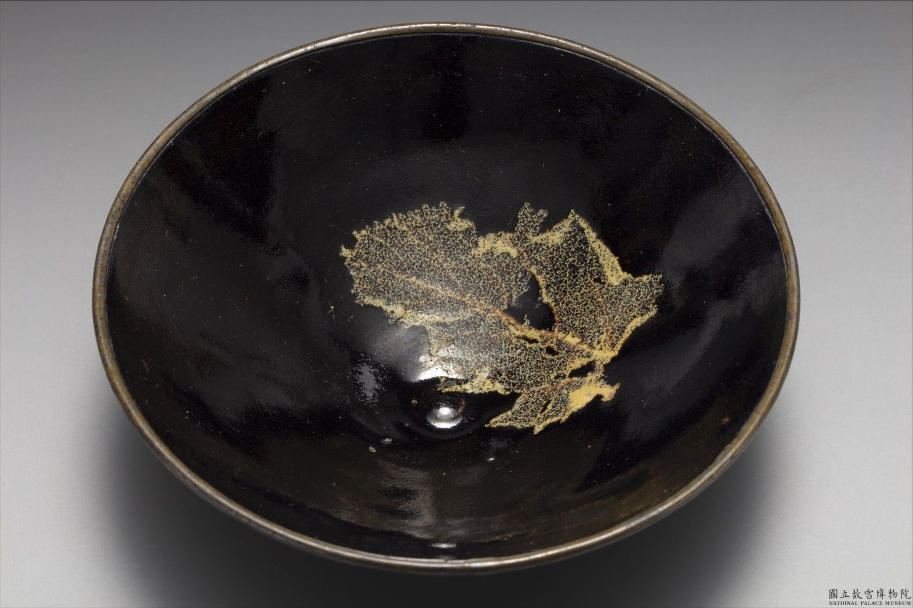

In ancient China, the Five Standard Colors (五正色, wǔ zhèngsè) were tied to the Five Elements (五行, wǔxíng) and cardinal directions, forming a cosmological system that influenced art, rituals, and governance. Each color symbolized natural forces and social values:
- Azure (青, qīng)
- Element: Wood (木)
- Direction: East
- Meaning: Growth, renewal, and harmony. Qīng (a blend of blue and green) was used in art and textiles, symbolizing nature and balance. It was also associated with spring and the rising sun.
- Red/Scarlet (赤, chì)
- Element: Fire (火)
- Direction: South
- Meaning: Joy, luck, and celebration. Red was used in festivals (e.g., Lunar New Year) and imperial architecture (e.g., palace walls). Later, it became a symbol of revolution and prosperity.
- Yellow (黃, huáng)
- Element: Earth (土)
- Direction: Center
- Meaning: Power, stability, and fertility. Yellow was the imperial color, representing the emperor's authority. It was used in royal garments and architecture, symbolizing the earth and the center of the universe.
- White (白, bái)
- Element: Metal (金)
- Direction: West
- Meaning: Purity, mourning, and simplicity. White was used in funeral rites and to symbolize the end of life. It was also associated with the moon and autumn.
- Black (黑, hēi)
- Element: Water (水)
- Direction: North
- Meaning: Heaven, mystery, and the unknown. In the Qin Dynasty (221–206 BCE), black was the imperial color, representing power and authority.

 

 

Picture source: National Palace Museum, Taipei